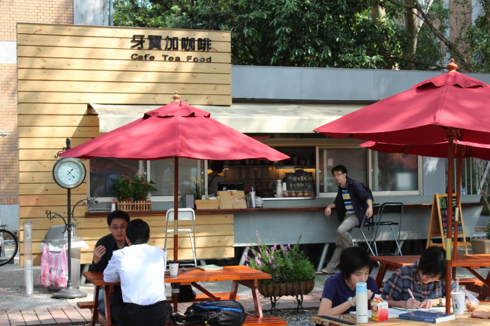
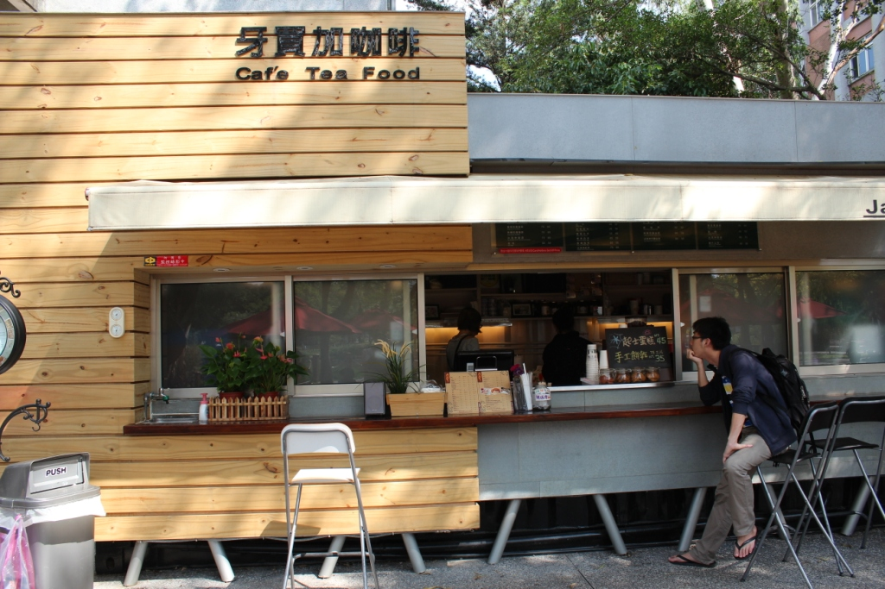

牙買加咖啡
- 本校營業地點位置 醉月湖畔
- 餐飲業者名稱 牙買加咖啡
- 公司名稱 品優食品行
- 營業時間及休息日 周一至周日09:00-18:00
- 聯絡電話(02) 2363-3931
- 營業項目、型態 簡餐/咖啡/點心
- 業者簡介
(一)簡單、快速、美味、多變化 招牌特色餐：康尼熱狗堡、火腿潛艇堡、墨西哥捲餅、甜心鬆餅等，以口味多變化，達成多元化餐點，滿足大家的需求。 - (二)健康、少油煙、重環保
食品僅以簡單烹飪，烤或加熱之方式處理，無煎、炒、炸等多油煙調理方式，明示產品卡路里
網址：http://www.dante.com.tw/new_2_1.php
餐廳業者參考照片
- 

- 